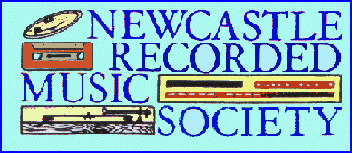

WHO ARE WE? - we are a group of people who share an interest in
the enjoyment of music, mainly classical.
OUR RECITALS - are mainly presented by our own members, or by
guests from other societies. They are a personal slant on some aspect
of the enjoyment of music.
OUR MEETING PLACE - a pleasant room, well heated in winter, and
with seating for approximately 40 people.
OUR VENUE - We meet fortnightly on alternate Friday afternoons from September to May
(with some adjustment to allow for seasonal dates and concerts at the Victoria Hall)
at KING STREET STUDIOS,
14a King Street,
Newcastle-under-Lyme,
Staffordshire
ST5 1EJ.
AN INVITATION - If you are interested, please come along as our guest
for the afternoon. We can assure you of a friendly welcome, and if you
enjoy what we have to offer you might like to join us.
MEETINGS begin promptly at 2.00pm and end at 4.00pm.
MEMBERSHIP - Annual Subscription is £10
plus a recital fee of £4.00,
which includes refreshments during the interval.